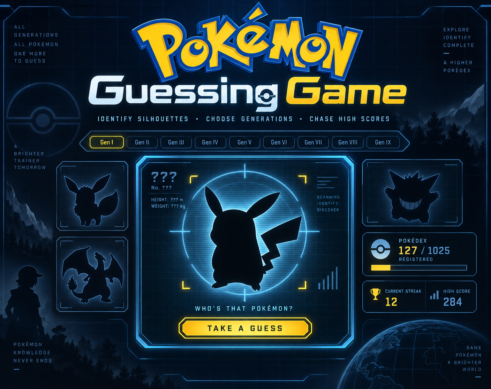

PLAY ↗
PLAY ↗
GODOT / 2D ACTIONGAMEDEV.TV JAM 2025
Planet Defense
A small planet, a growing threat, and a space-defense loop built around responsive controls and escalating pressure.
CREATIVE DEVELOPMENT CHANNEL
Games, Godot tools, and playable ideas—built in public, tested by curiosity.

FEATURED SYSTEM
GODOT ADD-ON / PUBLIC PAID BETA
A model-agnostic humanoid character foundation for Godot 4.7—one reusable scene for movement, cameras, animation, customization, and compatible custom models.
PLAYABLE BUILDS
OUT IN THE WORLD
PLAY ↗
A small planet, a growing threat, and a space-defense loop built around responsive controls and escalating pressure.

PLAY ↗A re-imagining of an early Godot project, built around quick rounds, Pokédex knowledge, and online leaderboards.
EARLY SIGNALS
THE BUILD LOG STARTS SOMEWHERE
Smaller experiments still matter. They show the path from a first finished Godot game to larger systems and worlds.
FOLLOW THE SIGNAL